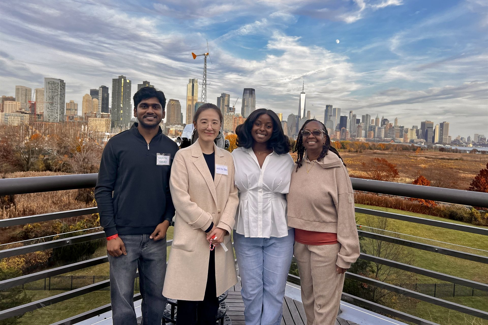
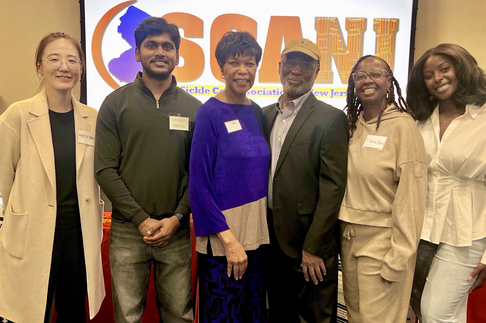
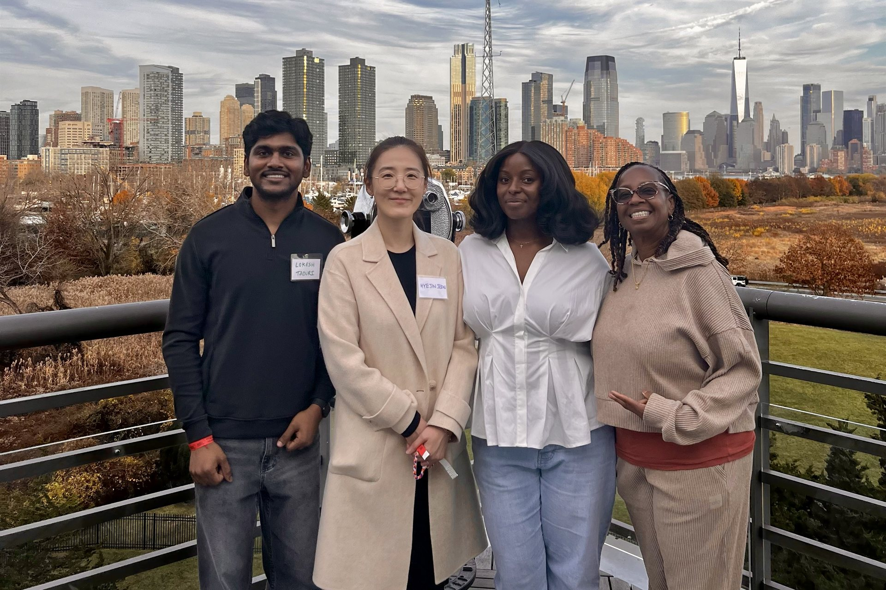

The Powell-Roach Lab launches its new website
Our new website shares our research, team, publications and opportunities to get involved.
Hover a cell to identify it · click the blockage to clear it



Sickle cell disease (SCD) is an inherited blood disorder. Red blood cells take a rigid, crescent ("sickle") shape and can block blood flow. Sudden, severe pain episodes, called vaso-occlusive crises, are its most common complication. Many adults also live with chronic pain every day.
The Powell-Roach Lab at Rutgers University studies the biological, psychological and social sides of SCD pain. Our goal is to turn what we learn into better assessment, treatment and support.
Our work spans four connected areas, from how pain is experienced to how it is treated in clinics and communities.
How acute crisis pain turns into chronic pain, and why people's experiences differ so much.
Read moreHow sleep, stress, mood and coping shape pain and daily functioning.
Read moreDigital and patient-centered tools for tracking symptoms and supporting self-management.
Read moreReducing stigma and improving access to timely, high-quality pain care.
Read moreAmericans are estimated to be living with sickle cell disease
Black or African American babies are born with sickle cell disease
Black or African American babies are born with sickle cell trait
Hispanic American babies are born with sickle cell disease
Source: U.S. Centers for Disease Control and Prevention (CDC)
Our new website shares our research, team, publications and opportunities to get involved.
Undergraduates interested in pain research and health equity can apply to join the lab.
Learn moreEach year we join the global community in raising awareness of sickle cell disease and the people it affects.
We welcome applications from undergraduate, graduate and postdoctoral researchers who want to improve the lives of people with sickle cell disease.